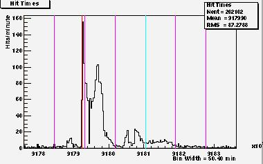

{kind=link}
{kind=link}
{kind=link}
{kind=link}
{kind=link}

After the Slashdot Effect paper was announced on /., a very large surge in hits was experienced by the server hosting the paper. Interest in the original paper detailing the /. effect due to other articles hosted by this server, was greater by a factor of 4 than any of the previous articles. As of Feb 15, 1999, about two weeks after the announcement, the paper has been viewed by over 17,000 people. This is compared to the other three articles mentioned in the /. paper of which the Stallman article, which was read by the greatest number of people, was viewed by just over 4000 people. It was announced on /. over 3 weeks ago. What follows are the httpd server logs during the time that the /. effect paper was announced on Slashdot. In short, this addendum is presenting the Slashdot effect on the Slashdot effect paper.
The apache httpd server logs were scanned once more, to measure the hit rate in raw hits per minute, two weeks after the /. effect paper was announced on Slashdot. The /. effect on this paper was quite remarkable and an addendum to the original /. effect paper was due. The surge in hits/minute was phenomenal as attested by the following plots. The first and main plot, in Figure 1, is that of the raw hits/minute shown over a period of 1 week. The red line marks the time of the /. announcement of the /. effect paper. The blue line indicates the time when the paper was announced on Linux Weekly News. The purple lines indicate time marks on 24 hour intervals, with the first one marking Feb 1st 00:00 hours. The paper was announced on Feb 1st, at 9:40pm EST. The /. effect took place about 15 minutes later. (See Figures 2 and 3.) The highest hit rate was measured right up front. It was literally a wave front hitting the server. The hit rate quieted down over night, with a very pronounced lull starting about 3am for about 2 hours. One would postulate that the /. server was down during that period. The rate picked up again and climbed to a second high, not as high as the initial surge, at about 9:30am. This rate held for about another 5 hours and began to fall rather drastically around 3pm EST the day after the announcement on Slashdot. The hit rate persistence is consistent with the announcement staying on the front page of Slashdot. The announcement left the front page of /. at about the time the hit rate fell on the server.
|

|
What follows is a table of plots of the same data but on a finer time scale. (9 min/bin as opposed to 50 min/bin in the plot in Figure 1.) The purpose is for one to better study the data. The purple lines are now time marker on 6 hour intervals. The limits on the time axis overlap between plots to help the reader follow the continuity of the data. Because of binning effects, the overlap regions of the data from one plot to the next look slightly different, and this dissimilarity should be ignored.
The first item to note is the fact that the highest hit rate occurs just after the announcement on Slashdot. The second item to note is the resurgence in hit rate the following day, while the announcement is still on the front page. This is an indication that the readership of Slashdot is covered 24 hours a day, or around the world. There are not as many Asian and European readers there are in the US and countries which share the US time zone which is an indication that a fair fraction of the US east coast /. readership missed the initial posting, but got it the following morning. (This is how one could interpret the second rise in hits which peaks around 9:30am the following morning.)
There is a second resurgence, on a much smaller scale, two day's later which peaks at about 9:30am, with an abrupt fall off and then a re-resurgence around 6pm that day. This is seen in Figure 4. plot. The author scanned the various Linux news web pages for posting of the /. effect article but found none. This small resurgence occurring 2 days after the initial posting by /. is unexplained and open to interpretation.
On or about midnight of the 3rd of Feb., Linux Weekly News posted an announcement of the /. effect paper on one of its back pages. This is indicated by the light blue time mark. There is an indication that this posting contributed to the hit rate, at a much lower rate for another 24 hours. This is best seen in the Figure 1, with the hit rate following a gentle rise after the light blue time mark of the LWN posting.
Finally, the small surge in hits before the /. posting, was due to the author's announcing the availability of the paper to the redhat mailing list as well as to some his colleagues via e-mail
|
| ||
|
|
To conclude, this will be the last paper related to the Slashdot effect. If for some reason this addendum to the /. effect generates a new /. effect on the server, this will most likely not be presented as an Addendum to an Addendum. Unless the /. wave front and ensuing hit rate structure reveal new valuable data shedding light on the inner workings of the Internet and the people who use it.